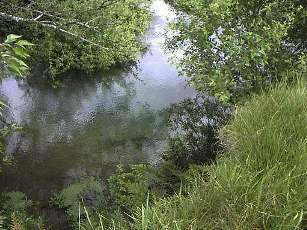
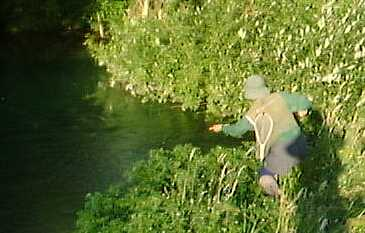

君よ知るや南の国
南ワイカトのスプリングクリークにて（４）
皆様、こんにちは。ニュージーランド北島のハミルトンからお届けします「君よ知るや南の国」です。
日本では、サクラの花もチラホラ咲き始めたようですが、皆様いかがお過ごしでしょうか？ハミルトンは秋の訪れと共に、朝晩めっきり冷え込むようになりました。こうした気温の低下が水生昆虫の羽化を誘うようで、春先ほどではないものの、川面では虫の舞い飛ぶ姿が見られるようになりました。
今回はスプリングクリークの鱒釣り、その４をお届けします。
2001年１月14日 南ワイカトのスプリングクリークにて（４）
その淵は、川が鋭角に左に曲がったところにできており、向こう岸はちょっとした高さの崖になっており、淵をぐるりと囲んで周囲に灌木が密生している。その灌木に守られるように、深い青色をたたえた鱒たちの安息の場が、ひっそりと見えている。

こちら岸からは、淵の中央めがけて岬のように草むらが突き出しており、ある程度近くまでは近づけるのだが、不用意に近づけば鱒たちはすぐに姿をくらましてしまう。釣りにくいところに大物が潜む....という典型的なパターンである。
這いずりながら川岸を大きく迂回して、もっとも見つかりにくい角度からアプローチした二人組は、牧草地と川を隔てる柵の下までたどり着いた。
恐る恐る頭を上げて淵の奥を目で探ると、一見なにも変化の無い静けさの中に、時折、青黒い影がぼんやり現れては消えて行く。その影は、大、中、小と合わせて三つ。今日もNO.1からNo.3は勢揃いらしい。
「いるねぇ、今日も」
「いますねぇ、またまた」
私がフライ、Ｎ君がルアーなので、比較的 「静かに」 攻めることができるフライ釣りを優先してもらい、私が先攻することとなった。
さてと。 というコトで、実績のある.....というより夏場の一つ覚えのエルクヘアカディス（トビケラを模した毛針の一種）を結ぶ。フライをいったんロッドに引っかけて余分な糸を巻き取り、腹這いのまま柵をくぐる。
その低い姿勢のまま、岸辺の草むらに降り、横ずさりに少し前進する。フライを垂らし、ラインをたぐり出し、できるだけ少ないフォルスキャストでフライを淵の奥深くへ送り込む。さっきくぐった柵が、こんどはバックキャストを妨害すべく立ちはだかる。淵の水面上には、灌木の茂みから枯れ枝が一本ぶら下がっている。両サイドは青々と繁る密な灌木、手前にはラインを引き戻す速い流れ。
何度対峙しても、やっかいなポイントである。
最初の一投は、青黒い影のはるか手前に落ち、すぐに水流に引き戻された。二投め、三投め、四投め、そこそこの位置に落ちたカディスに一番小さい影が近づき、パシャ！とくわえる。ほい、よっしゃ！と合わせたつもりがなぜかすっぽ抜ける。
『あじゃ？』
一呼吸置いたつもりが、流れ去るフライを追い食いしたせいか、鱒の口からフライがすっぽ抜けてきた。ま、一番小さいヤツだったから別にいいかと思い直し、なおも攻め続ける。が、なにか不審な挙動を感じたのか、No.1そしてNo.2ともに水面近くから川底深くへとポジションを変えてしまった。
されば。 ということで、重めのニンフ、重めのストリーマー、ラバーレッグなどなどを繰り出したのだが、意外と水中の流れが強く、沈むフライをことごとく鱒の位置から引き戻してしまう。
「だめだねぇ、こりゃ」
「なかなか難しいねぇ」
などと小声でやりとりしたあとで、もうこれで出なかったらＮ君と選手交代しようと思いつつ、これまたおきまりの、孔雀の羽を胴に巻いたパラシュートタイプのフライに結び変える。そのついでに、ティペットを点検し、ややくたびれていたようなので、新しいティペットを50cmほど長めに継ぎ足す。
背後の柵を越すように高いバックキャストと灌木の枝をくぐり抜けるシャープなプレゼンテーションを心がけ、気合いの一投が水面に落ちる。
最も怪しいポイントからはやや左にずれたものの、長めのティペットが予想以上に自然で長いドリフトをフライにもたらし、左奥の茂みの際までゆらゆらと毛針が流れてゆく。
と、予想外のポイント、茂みの直下から急に大きな影が浮上し、水面に出た鼻面がフライをくわえた。白い口が閉じて、影が全部水中に没してから、せぇ～の！ としっかりロッドを立てる。
「やぁったぁ！」
どんぴしゃのタイミング、大物向けの遅い合わせが功を奏し、グングンと弾むような重みが竿をどよめかせる。

案の定、重みの主は、いったん上流へ向かい、灌木の下へ潜り込む。竿を持つ左腕をめいっぱい下流側に伸ばし、竿先を水中に突っ込んで糸が枝に絡まるのを防ぐ。茂みの奥で悶々と捻転していた重い手応えが、次第に下流へと寄ってくる。
魚影が見えるか？ と思った瞬間、大きな影が茂みの下から飛び出し、淵を突っ切り下流へと向かう。
『No.2だっ！』
影の正体がNo.1でなかったことにがっくりする暇も与えず、下流に続く荒瀬の頭で派手にジャンプをした鱒は、そのまま荒瀬へと逸走し続ける。
『うわっ！ やば！』
あの荒瀬の中には、こちら岸に沿ってギザギザの岩盤が露出しており、その下が深くえぐれている。あの中に潜り込まれてあの魚体で引きずられたら、いくら新品の３Ｘティペットでも簡単に切れるだろう。何を隠そう、Ｎ君も、最初にここを攻めたときに同じ手で糸を切られているのだ。
こちら岸を鱒に引かれて下って行くのは、鋸状の岩盤、さらに続く長い水草のエグレとリスクが多すぎる。左曲がりの淵の下流まで歩み込み、なんとか対岸に渡れそうな深さを見て取るとロッドを高く掲げたまま、ウェーダーに水が入るぎりぎりの深さで川を渡る。鱒が岩盤のあたりで二度目の、高いジャンプを見せた。（次回に続く）
君よ知るや南の国 目次へ
サイトマップ
ホームへ
お問い合わせ